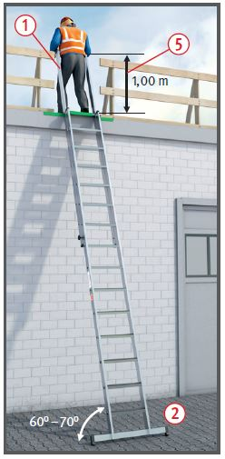
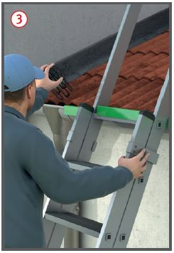
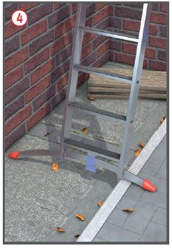
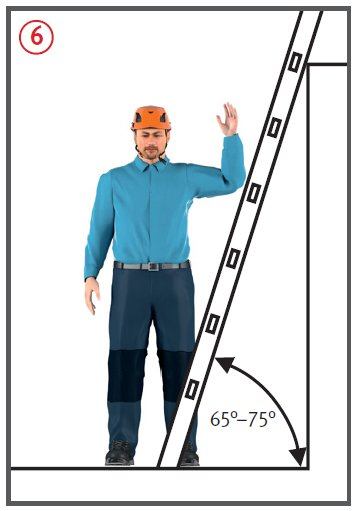
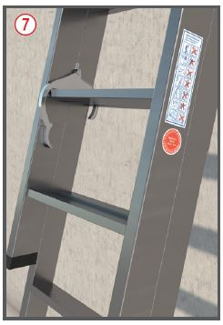
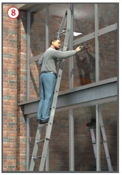

Gefährdungen
- Absturzunfälle durch z. B. mangelhafte Standsicherheit der Leiter, Fehlverhalten des Leiterverwenders, Abrutschen von Stufe oder Sprosse beim Auf- und Abstieg, fehlende Sicherung im Verkehrsbereich oder die Verwendung einer schadhaften Leiter.
Allgemeines
- Bevor eine Leiter als Arbeitsplatz
oder als Zugang zu hochgelegenen Arbeitsplätzen zur
Verfügung gestellt und verwendet
werden soll, ist im Rahmen der
Gefährdungsbeurteilung zu
ermitteln, ob der Einsatz einer
Leiter erforderlich oder nicht ein
anderes Arbeitsmittel für diese
Tätigkeit sicherer ist.
- Der Einsatz von Leitern ist auf
Arbeiten mit geringer Gefährdung
und geringer Dauer der
Verwendung zu beschränken.
- Bauliche Gegebenheiten, die
nicht veränderbar sind, können
ebenfalls zum Einsatz von Leitern
führen.
- Als Verkehrsweg möglichst Anlegeleitern mit Stufen, Standfußverbreitungen
 und Holmverlängerungen
und Holmverlängerungen  verwenden. Der Auf- und Abstieg wird ohne
das seitliche Übersteigen von
der Leiter sicherer.
verwenden. Der Auf- und Abstieg wird ohne
das seitliche Übersteigen von
der Leiter sicherer.
Schutzmaßnahmen
- Anlegeleitern gegen Ausgleiten, Umfallen, Umkanten, Abrutschen und Einsinken sichern, z. B. durch:
- Anbinden des Leiterkopfes,
- Fixieren des Leiterfußes,
- Verwendung von Leiterzubehör wie z. B. Fußverbreiterungen , Leiterkopfsicherung
 , dem Untergrund angepasste Leiterfüße
, dem Untergrund angepasste Leiterfüße  ,
,
- Einhängevorrichtungen.



- Standsicherheit des Leiterverwenders verbessern durch die Verwendung von Stufenleitern.
- Schadhafte Leitern nicht verwenden, z. B. angebrochene Holme und Sprossen/Stufen von Holzleitern, verbogene und angeknickte Metallleitern. Angebrochene Holme und Sprossen/Stufen von Leitern nicht flicken.
- Holzleitern gegen Witterungs- und Temperatureinflüsse geschützt lagern. Keine deckenden Anstriche verwenden.
- Leitern nur an sichere Stützpunkte anlehnen. Mindestens 1,00 m über die Austrittsstelle hinausragen lassen
 oder andere Festhaltemöglichkeit schaffen/nutzen.
oder andere Festhaltemöglichkeit schaffen/nutzen.
- Richtigen Anlegewinkel einhalten
 .
.
Er beträgt bei
- Stufenanlegeleitern 60–70°,
- Sprossenanlegeleitern 65–75°.
- Leiter nur mit geeignetem
Schuhwerk betreten und darauf
achten, dass eine Verschmutzung
der Laufsohle das Betreten der
Stufen, Sprossen nicht nachteilig beeinträchtigt.
- Die obersten 3 Sprossen/Stufen nicht betreten.
- Betriebsanweisung erstellen
und Beschäftigte im Umgang mit
Leitern regelmäßig unterweisen.
- Leitern im Verkehrsbereich z. B. durch Absperrungen sichern.
- Bei Arbeiten im Freien Umgebungs- und Witterungseinflüsse berücksichtigen (z. B. Wind, Schnee- und Eisglätte, herab- oder umfallende Teile).
Zusätzliche Hinweise für mehrteilige Anlegeleitern
- Leiter nur bis zu der vom Hersteller angegebenen Länge zusammenstecken oder ausziehen.
- Bei Schiebeleitern auf freie Beweglichkeit der Leiterteile sowie auf ordnungsgemäßes Einrasten der Feststelleinrichtungen achten
 .
.
Zusätzliche Hinweise für Glasreinigerleitern
- Leiter nur bis zu der maximal
zulässigen Länge zusammenstecken.
- Auf sichere Verbindung der Leiter-Steckanschlüsse achten.
- Kopfpolster bzw. Anlegeklotz nur an sichere Stützpunkte anlehnen
 .
.
Zusätzliche Hinweise für Arbeitsplätze auf Anlegeleitern
- Bei Bauarbeiten darf
- der Beschäftigte bei einer Standhöhe von mehr als 2,00 m nicht länger als 2 Stunden je Arbeitsschicht arbeiten,
- das Gewicht des mitzuführenden Werkzeuges und Materials 10 kg nicht überschreiten,
- die Windangriffsfläche von mitgeführten Gegenständen nicht mehr als 1 m2 betragen.
- Für zeitweilige Arbeiten ist eine max. Standhöhe bis 5,00 m zulässig.
- Von Anlegeleitern darf nicht gearbeitet werden, wenn
- von vorhandenen oder benutzten Stoffen und Arbeitsverfahren zusätzliche Gefahren ausgehen, z. B. Arbeiten mit Säuren, Laugen, Heißbitumen,
- Maschinen und Geräte mit beiden Händen bedient werden müssen, z. B. Handmaschinen, Hochdruckreinigungsgeräte.
- Der Beschäftigte steht mit beiden Füßen auf einer Stufe oder Plattform.
Zusätzliche Hinweise für Leitern als Verkehrswege
- Leitern als Aufstiege zu Arbeitsplätzen nur bei geringer Gefährdung und geringer Verwendungsdauer einsetzen und wenn dabei der zu überbrückende Höhenunterschied ≤ 5,00 m ist.
Prüfungen
- Art, Umfang und Fristen erforderlicher Prüfungen festlegen (Gefährdungsbeurteilung) und einhalten, z. B. regelmäßige Prüfung durch eine zur Prüfung befähigte und beauftragte Person.
- Ergebnisse dokumentieren (z. B. Leiterkontrollbuch, Prüfliste, Prüfplakette).
- Kontrolle auf augenscheinliche Mängel vor jeder Verwendung.
07/2021